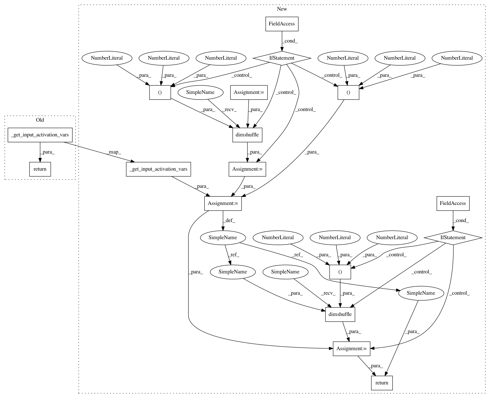

8edfa441b61a8ecf11515e6007a9e21054dbad19,deeplift/blobs/convolution.py,Conv2D,_get_mxts_increments_for_inputs,#Conv2D#,178
Before Change
- mult_times_filter_ref_on_layer_below)
def _get_mxts_increments_for_inputs(self):
return B.conv2d_grad(
out_grad=self.get_mxts(),
conv_in=self._get_input_activation_vars(),
filters=self.W,
border_mode=self.border_mode,
subsample=self.strides)
class ZeroPad2D(SingleInputMixin, Node):
After Change
return to_return
def _get_mxts_increments_for_inputs(self):
effective_mxts = self.get_mxts()
input_act_vars = self._get_input_activation_vars()
if (self.channels_come_last):
effective_mxts = B.dimshuffle(effective_mxts,(0,3,1,2))
input_act_vars = B.dimshuffle(input_act_vars, (0,3,1,2))
to_return = B.conv2d_grad(
out_grad=effective_mxts,
conv_in=input_act_vars,
filters=self.W,
border_mode=self.border_mode,
subsample=self.strides)
if (self.channels_come_last):
to_return = B.dimshuffle(to_return,(0,2,3,1))
return to_return
class ZeroPad2D(SingleInputMixin, Node):
In pattern: SUPERPATTERN
Frequency: 3
Non-data size: 17
Instances
Project Name: kundajelab/deeplift
Commit Name: 8edfa441b61a8ecf11515e6007a9e21054dbad19
Time: 2016-12-09
Author: avanti.shrikumar@gmail.com
File Name: deeplift/blobs/convolution.py
Class Name: Conv2D
Method Name: _get_mxts_increments_for_inputs
Project Name: kundajelab/deeplift
Commit Name: 8edfa441b61a8ecf11515e6007a9e21054dbad19
Time: 2016-12-09
Author: avanti.shrikumar@gmail.com
File Name: deeplift/blobs/convolution.py
Class Name: Conv2D
Method Name: get_contribs_of_inputs_with_filter_refs
Project Name: kundajelab/deeplift
Commit Name: 8edfa441b61a8ecf11515e6007a9e21054dbad19
Time: 2016-12-09
Author: avanti.shrikumar@gmail.com
File Name: deeplift/blobs/convolution.py
Class Name: Conv2D
Method Name: _get_mxts_increments_for_inputs
Project Name: kundajelab/deeplift
Commit Name: 8edfa441b61a8ecf11515e6007a9e21054dbad19
Time: 2016-12-09
Author: avanti.shrikumar@gmail.com
File Name: deeplift/blobs/convolution.py
Class Name: Conv1D
Method Name: _get_mxts_increments_for_inputs